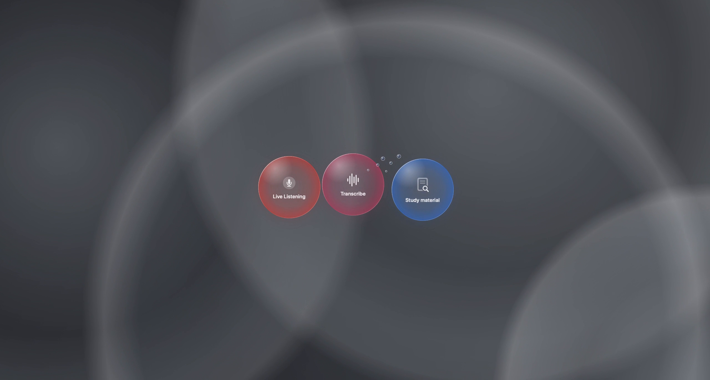
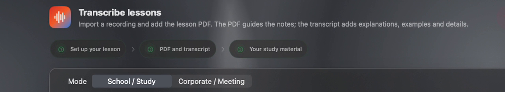
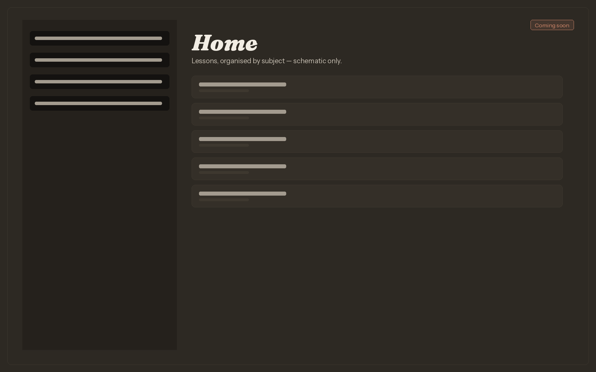
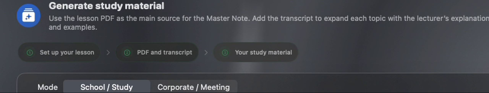
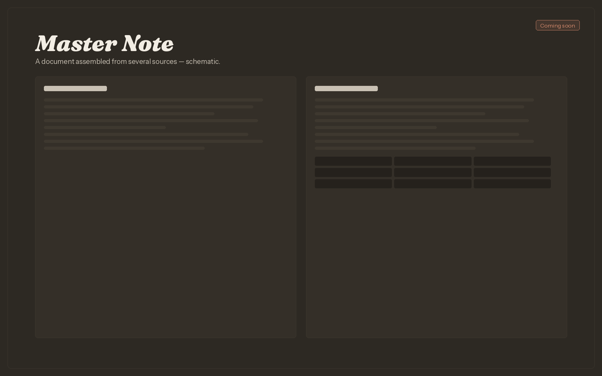
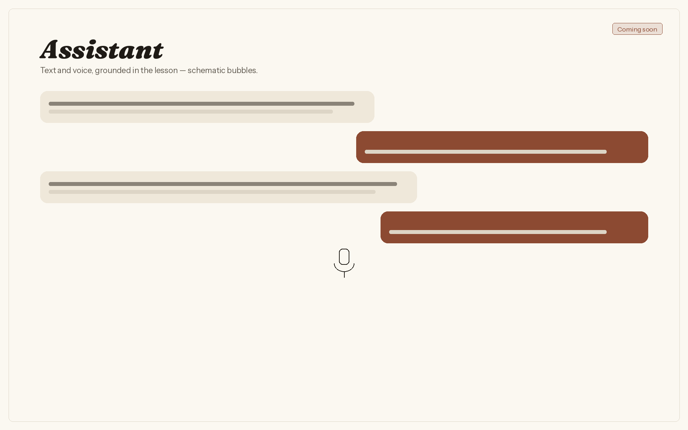
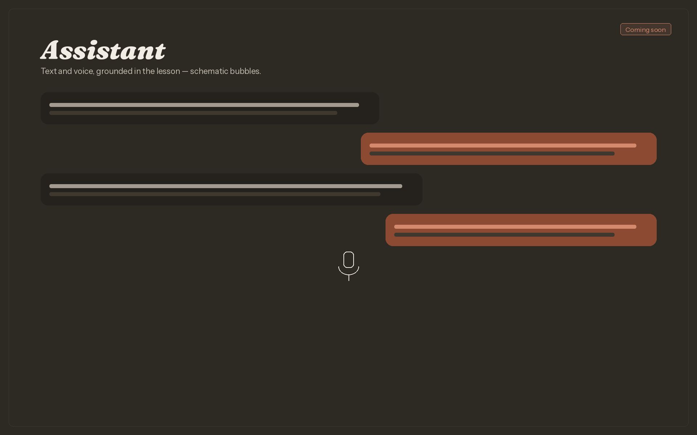

A walk through the app. On a wide screen the window stays with you as you scroll; you can also click a step. On a smaller screen, each captured step carries its own image.


-

-
-


-



Lyceum started from a practical need: to take the recording and the slides of a lecture and come away with a document I could study from — while keeping control of the sources, the prompt and the finished result.
It is written in Swift and SwiftUI. I am its sole author. The app records or imports audio and transcribes it on the Mac. It then brings transcripts together with PDF slides and other materials to produce a Master Note or a meeting report, exported as an editable Word document.
Lyceum is finished enough to use: it is installed and running on my Mac. A public release is not available yet. Before one, I still intend to test the package on a clean Mac, update the documentation, sign and notarise the build, and publish a first release on GitHub.
The screens in the tour are from the app on this Mac. A still of a finished export, and of the assistant answering a question, will be added when they are captured. A provider and a model can be chosen; API keys are kept in the macOS Keychain; a local model can be used on this Mac. The app shows the tokens the provider reports.
Iteration
A change that mattered
On a real lecture, generation could stall while it waited for a clarification, and the Word file sometimes included hard-to-read JPEG clippings of diagrams. I changed the flow so that generation resumes on its own, and diagrams are rebuilt as editable elements. I checked the export on a test document.
Now
In progress
The work now is about staying faithful to the prompt, about how diagrams are reconstructed, and about how the app behaves during a long generation. There is not yet a public repository or a signed build.
Stack
Made with
- Swift
- SwiftUI
- Whisper, on-device
- MLX, on Apple silicon
- Multi-provider LLM integration
- Local models, on this Mac
- macOS Keychain
- DOCX export
- Xcode
- Git
As the app grew, the code became too complex for me to handle alone, so development moved forward with the help of AI. I designed the app, directed the work, and tested everything myself.
Contact
Contact
Questions about Lyceum, or about working together, are welcome.